Seminar 3 — Statistical Power & Communicating Results Through Plots
PSY40760 Advanced Data Analysis and Statistics in R
Published
October 16, 2026
Worksheet 3
Welcome
This week covers two topics:
Statistical power
Plotting data in R using ggplot2
Much of the materials builds on the running example introduced in Seminar 2: a 12-week weight-loss programme, compared with a control group, where the between-person SD of weight change is 5 kg and the smallest effect worth the cost of the programme is 2 kg. Trial A (n = 24 per group) found 4.37 kg, d = 0.87, t(46) = 3.03, p = .004. Trial B (n = 4,000 per group) found just 0.24 kg, d = 0.05, t(7998) = 2.17, p = .030: also significant, but far below the SESOI of 2 kg (Smallest Effect Size of Interest). You will learn today that the two trials differ sharply in power: Trial A had only 27% power to detect the SESOI (Smallest Effect Size of Interest), whereas Trial B’s was effectively 100%. This session explains those numbers and gives you the tools to compute them for a study of your own.
Session at a glance
Date
Friday 16 October 2026
Room
QUI-013
Time
170 min
Staff
Dr Ondrej Zika, Cameron McCabe
Theory
Statistical power (concepts, pwr, power by simulation); communicating results through plots
Practical
Power (pwr, then by simulation) and plotting (ggplot2), each a joint walkthrough followed by exercises
Before you arrive
1. Environment
Use the same course folder as Seminar 1 and 2, set up exactly as in the environment set-up guide: here finds the project root via .root-practicals, and renv manages the packages. This week adds one new package:
library(here)
Warning: package 'here' was built under R version 4.4.1
here() starts at /Users/zika/projects/2026-advanced-stats-mscbn-PSY40760/2026-materials/psy40760-practicals-2026
here::i_am(".root-practicals")
here() starts at /Users/zika/projects/2026-advanced-stats-mscbn-PSY40760/2026-materials/psy40760-practicals-2026
here::here() # print the path to check it's correct
Warning: package 'renv' was built under R version 4.4.3
Attaching package: 'renv'
The following objects are masked from 'package:stats':
embed, update
The following objects are masked from 'package:utils':
history, upgrade
The following objects are masked from 'package:base':
autoload, load, remove, use
renv::load(here::here())
# Install new package called pwrrenv::install("pwr")renv::install("ggplot2") # also fills in any missing helper packages (e.g. labeling)renv::install("labeling")renv::install("dplyr")renv::snapshot() # records them in renv.lock
dplyr is already in your library from previous weeks.
Modern Statistics with R — the data visualisation / ggplot2 chapter.
** **
. The Art of Visualization with ggplot2 https://nrennie.rbind.io/art-of-viz/
Bonus (optional): R-tistry — generative art made entirely with R code. Explore it, then submit a piece; the class and the wider Psychology department vote, and the winner receives an important statistical award. Not assessed — see the Extra section at the end for the brief and the links.
Today’s session
Theory: the four ingredients of statistical power; the pwr package and why “observed power” is circular; power by simulation and why it generalises beyond what a formula can handle; why underpowered research drives the replication crisis; three principles for communicating results through plots; the grammar of graphics.
Practical: two joint walkthroughs (power, then plotting), the same two topics as independent exercises, and an optional Extra section (normal vs. t-distribution, R-tistry).
Part 1: Joint walkthrough
We will work through this section together. Run each chunk as we go and make sure you understand the output before moving on. As every week, start by loading the environment:
library(dplyr)
Attaching package: 'dplyr'
The following objects are masked from 'package:stats':
filter, lag
The following objects are masked from 'package:base':
intersect, setdiff, setequal, union
library(ggplot2)library(pwr)
Warning: package 'pwr' was built under R version 4.4.1
Section A: Power
1.1 qt(): the quantile function of the t-distribution
You met qt() in Seminar 2 to find a critical value. Let’s be precise about what it does, because the rest of this section leans on it. qt(p, df) answers: for a t-distribution with df degrees of freedom, what value has probability p below it? It is the exact mirror image of pt(), which you’ll meet in a moment — pt() goes from a value to a probability, qt() goes from a probability to a value.
qt(0.975, df =46) # the value with 97.5% of the distribution below it (df = 46, Trial A)
[1] 2.012896
qt(0.95, df =46) # the value with 95% below it — further left, since 95% < 97.5%
[1] 1.67866
qt(0.5, df =46) # the median: by symmetry, exactly 0
[1] 0
qt(0.975, df) is the one you’ll use constantly: it is the two-sided 5%-level critical value, because it leaves 2.5% in each tail (97.5% in the middle plus the 2.5% below it, 2.5% left over above).
qt(0.975, df =10) # few degrees of freedom: heavier tails, a bigger critical value...
[1] 2.228139
qt(0.975, df =500) # ...many degrees of freedom: close to the normal distribution's 1.96
[1] 1.96472
qnorm(0.975) # the normal distribution's version, for comparison
[1] 1.959964
Try it: what is qt(0.995, df = 46) (the critical value for a 1%-level two-sided test), and is it bigger or smaller than qt(0.975, df = 46)? Why does that make sense?
# your code here
1.2 Calculating power by hand
Now the real question: if the programme’s true effect really 2 kg, how likely is a study with n = 24 per group to find it? We build this up from exactly the quantities Seminar 2 already gave you — nothing new except two functions.
sd <-5# between-person SD of weight change (both groups)mean_diff <-2# the true effect we're asking about: the SESOI (Smallest Effect Size of Interest)n <-24# participants per group
Step 1 — the standard error. How much would the estimated difference vary from study to study, just from sampling?
se <- sd *sqrt(2/ n)se
[1] 1.443376
Step 2 — degrees of freedom and the critical value. From 1.1:
df <-2* n -2# since n is the same for both studies, otherwise n1 + n2t_crit <-qt(0.975, df)df
[1] 46
t_crit
[1] 2.012896
Step 3 — the threshold, in kg.t_crit is in t-units. Multiplying by the SE turns it back into kilograms: any estimated difference bigger than this would come out significant. Note that the threshold comes from H0 alone — it doesn’t care what the true effect is.
thr <- t_crit * sethr
[1] 2.905365
So Trial A needs to observe a difference of at least about 2.91 kg to reach p < .05.
Step 4 — where that threshold sits if the true effect is 2 kg. If the programme really works, estimates from studies like Trial A scatter around 2 kg (not 0), with the same SE. How far above 2 kg is the 2.91 kg threshold, in SE units? That is just a t-score, computed under H1:
t_h1 <- (thr - mean_diff) / set_h1
[1] 0.627255
The threshold is only 0.63 SEs above the true effect.
Step 5 — the areas, with pt().pt(x, df) gives the area to the left of x. To the left of the threshold, a real 2 kg effect is missed (β); to the right, it is detected (power):
beta <-pt(t_h1, df) # P(estimate below 2.91 kg | true effect = 2 kg): a misspower <-1- beta # P(estimate above 2.91 kg | true effect = 2 kg): a hitbeta
[1] 0.7332033
power
[1] 0.2667967
About 27%. The same picture in kilograms: the grey curve is H0 (centered on 0 kg), the blue curve is H1 (centered on 2 kg), the dashed line is the 2.91 kg threshold, and power is the shaded blue area to its right:
kg <-seq(-6, 8, length.out =400)h0 <-dt(kg / se, df) / se # H0: estimates centred on 0 kgh1 <-dt((kg - mean_diff) / se, df) / se # H1: same shape, centred on 2 kgplot(kg, h0, type ="l", lwd =2, col ="grey40",xlab ="Estimated difference (kg)", ylab ="density", main ="Power = blue area beyond the threshold")lines(kg, h1, lwd =2, col ="steelblue")right <- kg >= thrpolygon(c(thr, kg[right], max(kg)), c(0, h1[right], 0), col =adjustcolor("steelblue", 0.3), border =NA)abline(v = thr, lty =2)
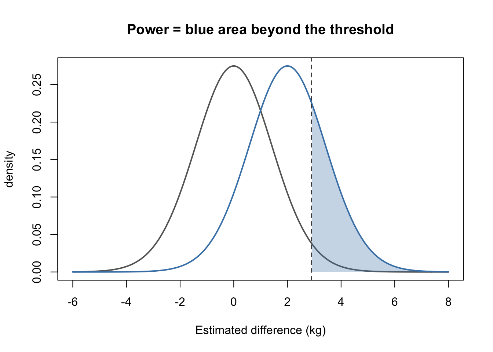
From kilograms to the noncentrality parameter (ncp)
Our 27% (power = 0.267) is very close to Seminar 2’s 27.4%, but not identical. The difference comes from a shortcut in Step 4: we simply slid the H0 t-shape over to 2 kg. Strictly, when H1 is true the test statistic follows a slightly different, slightly skewed distribution called the noncentral t-distribution. It is described by one extra number, the noncentrality parameter (ncp): how far the centre of H1 sits from 0, in SE units — that is, the true effect expressed as a t-value.
ncp <- mean_diff / sencp
[1] 1.385641
You have actually used it already: Step 4’s t_h1 is just t_crit - ncp.
t_crit - ncp
[1] 0.627255
t_h1
[1] 0.627255
Here is what ncp looks like on the t scale: the grey curve is H0 (centred on 0), the blue curve is H1, and the arrow is the shift between them, ncp = 1.39. The dashed lines are ±t_crit.
xs <-seq(-5, 8, length.out =400)plot(xs, dt(xs, df), type ="l", lwd =2, col ="grey40", ylim =c(0, 0.47),xlab ="t", ylab ="density", main ="H1 is H0 shifted by ncp")lines(xs, dt(xs, df, ncp = ncp), lwd =2, col ="steelblue")abline(v =c(0, ncp), lty =3, col =c("grey40", "steelblue")) # centres of H0 and H1abline(v =c(-t_crit, t_crit), lty =2) # the critical valuesarrows(0, 0.43, ncp, 0.43, length =0.08, code =3) # the shift = ncptext(-0.15, 0.43, paste("ncp =", round(ncp, 2)), adj =1)
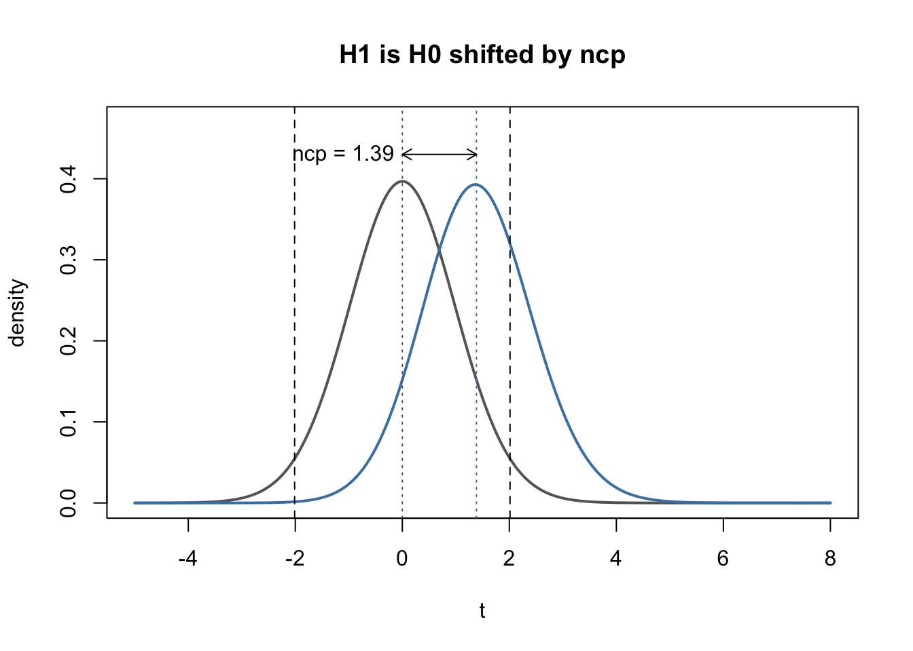
R’s pt() accepts an ncp argument, which gives the areas under the exact H1 curve. The test is two-sided, so there are technically two ways to reject H0: far above t_crit, or far below -t_crit. The second is very unlikely here, but we add it in for completeness:
27.4% — exactly Seminar 2’s number. In practice the kilogram method and the exact one agree to within a percentage point or so; the exact one is what pwr.t.test() uses.
1.3 pwr.t.test(): the one-line version
Only now, having done it by hand, bring in the package. The pwr package (Champely) does the calculation from 1.2 for you. Its function for t-tests, pwr.t.test(), links four quantities:
Argument
What it is
Trial A
n
participants per group
24
d
effect size as Cohen’s d: the true difference / SD
2 / 5 = 0.4
sig.level
α, the false-positive rate you accept
0.05
power
1 − β, the chance of detecting the effect if it is real
what we want
These are the four ingredients from the slides, with one twist: the effect (2 kg) and the variability (SD 5 kg) enter together as a single number, d. Only their ratio matters: a 2 kg effect with SD 5 kg is exactly as easy to detect as a 4 kg effect with SD 10 kg.
The rule is: give it any three, leave the fourth out, and it solves for the missing one. Two further arguments describe the design: type ("two.sample", "one.sample" or "paired") and alternative ("two.sided" by default).
Solving for power (n known): how likely was Trial A to detect a 2 kg effect?
pwr.t.test(n =24, d = mean_diff / sd, sig.level =0.05, type ="two.sample")
Two-sample t test power calculation
n = 24
d = 0.4
sig.level = 0.05
power = 0.273649
alternative = two.sided
NOTE: n is number in *each* group
power should match power_by_hand from 1.2 to several decimal places — pwr.t.test() is running exactly the noncentral-t calculation above, just taking Cohen’s d (mean_diff / sd) instead of the two separately. Note the reminder at the bottom of the output: n is the number in each group.
Solving for n (an a priori power analysis, done before collecting data): leave n out and supply power instead, and it solves the equation the other way round — the n you’d need for 80% power:
pwr.t.test(d = mean_diff / sd, sig.level =0.05, power =0.80, type ="two.sample")
Two-sample t test power calculation
n = 99.08032
d = 0.4
sig.level = 0.05
power = 0.8
alternative = two.sided
NOTE: n is number in *each* group
The answer, 99.08, is not a whole number: always round up, so 100 per group (200 in total), roughly four times Trial A’s sample.
Solving for d (a sensitivity analysis, useful when n is fixed, e.g. by budget): leave d out. What is the smallest effect Trial A had 80% power to detect?
sens <-pwr.t.test(n =24, sig.level =0.05, power =0.80, type ="two.sample")sens$d # in units of SD
[1] 0.8261315
sens$d * sd # back in kilograms
[1] 4.130658
Trial A could reliably detect only effects of about 4.1 kg or more, roughly twice the 2 kg that would make the programme worthwhile. You can pull any single value out of the result with $, as here.
pwr has sibling functions that follow the same give-three-get-one rule for other tests, e.g. pwr.r.test() (correlation), pwr.anova.test() (one-way ANOVA) and pwr.chisq.test() (chi-squared). For designs they don’t cover, use simulation (1.5).
1.4 The observed-power fallacy
Trial A’s own data gave d = 0.87, not the SESOI’s (Smallest Effect Size of Interest) d = 0.40. What happens if you plug the observed effect back in?
pwr.t.test(n =24, d =0.87, sig.level =0.05, type ="two.sample")
Two-sample t test power calculation
n = 24
d = 0.87
sig.level = 0.05
power = 0.8389939
alternative = two.sided
NOTE: n is number in *each* group
84% power — reassuringly high. But this number is computed from the same data that produced the significant result in the first place, so of course it looks good: a low p-value and a high “observed power” are two views of the same fact, not two independent pieces of evidence. The honest version of this calculation is 1.2/1.3’s: the power to detect an effect you specified in advance, not the effect the data happened to hand you.
1.5 Power by simulation
1.2 and 1.3 both work from a mathematical model of the t-distribution. Simulation instead generates many pretend trials and simply counts how often the test comes out significant: no formula, no ncp, just rnorm() and t.test(). We build it up one step at a time.
Step 1 — write down what we assume is true. A trial has two groups. For each we need a true mean and a true SD, plus the number of participants per group. These are exactly the assumptions behind 1.2:
n <-24# participants per groupmean_ctrl <-0# true mean weight loss in the control group (kg)mean_prog <-2# true mean weight loss in the programme group (kg): a real 2 kg effectsd_ctrl <-5# true SD in the control group (kg)sd_prog <-5# true SD in the programme group (kg)
Step 2 — generate one pretend trial.rnorm(n, mean, sd) draws n random values from a normal distribution with that mean and SD. One call per group gives us one complete, made-up dataset:
set.seed(18) # makes the random numbers reproduciblecontrol <-rnorm(n, mean = mean_ctrl, sd = sd_ctrl)programme <-rnorm(n, mean = mean_prog, sd = sd_prog)mean(control)
[1] 0.06486246
mean(programme)
[1] 2.173177
mean(programme) -mean(control) # the estimated effect in this pretend trial
[1] 2.108315
Let’s look at it. The black line in each histogram is that group’s sample mean:
breaks <-seq(-25, 25, by =2.5) # same bins for both groups, so they are comparablepar(mfrow =c(1, 2)) # two plots side by sidehist(control, breaks = breaks, col ="grey80", main ="Control", xlab ="Weight loss (kg)")abline(v =mean(control), lwd =3)hist(programme, breaks = breaks, col ="steelblue", main ="Programme", xlab ="Weight loss (kg)")abline(v =mean(programme), lwd =3)
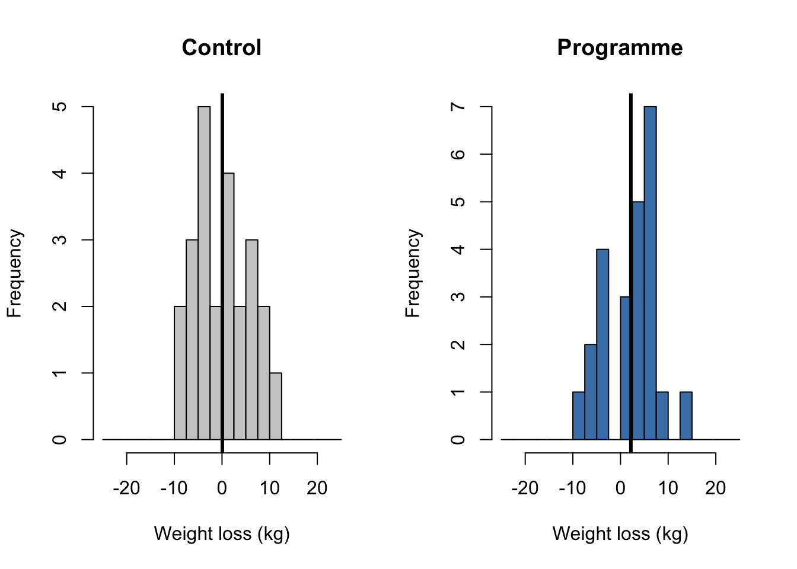
par(mfrow =c(1, 1)) # back to one plot per figure
The true difference is 2 kg, but the two sample means will not be exactly 2 kg apart: that is sampling error.
Step 3 — analyse it, exactly as if it were real data.
test <-t.test(programme, control, var.equal =TRUE)test$p.value
[1] 0.2107641
test$p.value <0.05# TRUE = significant: this pretend trial detected the effect
[1] FALSE
This pretend trial estimated the effect almost perfectly (about 2.1 kg), yet p ≈ .21: not significant. With n = 24 per group, even a spot-on estimate of a real 2 kg effect falls short of the 2.91 kg threshold from 1.2.
Step 4 — do it again. Same assumptions, new random draw. The histograms change, the difference between the means changes, and so does the p-value. Run this chunk several times and watch how often you get TRUE:
control <-rnorm(n, mean = mean_ctrl, sd = sd_ctrl)programme <-rnorm(n, mean = mean_prog, sd = sd_prog)par(mfrow =c(1, 2))hist(control, breaks = breaks, col ="grey80", main ="Control", xlab ="Weight loss (kg)")abline(v =mean(control), lwd =3)hist(programme, breaks = breaks, col ="steelblue", main ="Programme", xlab ="Weight loss (kg)")abline(v =mean(programme), lwd =3)
Even though the effect is real every single time, many runs come back non-significant. Each of those is a Type II error (a miss).
Step 5 — wrap one trial in a function. Running chunks by hand gets tedious, so we package Steps 2 and 3 (minus the plots) into a function that returns TRUE or FALSE:
one_trial <-function(n, mean1, mean2, sd1, sd2) { group1 <-rnorm(n, mean1, sd1) # control group2 <-rnorm(n, mean2, sd2) # programme test <-t.test(group2, group1, var.equal =TRUE) reject <- test$p.value <0.05# the same decision as comparing t_obs to t_crit in 1.2 reject}one_trial(n =24, mean1 =0, mean2 =2, sd1 =5, sd2 =5) # one pretend trial: TRUE or FALSE
[1] FALSE
Step 6 — repeat it many times and count.replicate() runs the function 2,000 times. Power is simply the long-run proportion of TRUE:
set.seed(4)decisions <-replicate(2000, one_trial(n =24, mean1 =0, mean2 =2, sd1 =5, sd2 =5))mean(decisions) # the proportion of simulated trials that rejected H0
[1] 0.294
Compare this to power_by_hand (1.2) and pwr.t.test()’s answer (1.3) — all three should agree to within a percentage point or two (simulation is noisy; more replicates would tighten it further).
Notice one_trial() takes the two groups’ SDs separately (sd1, sd2), even though we gave it the same value for both. The by-hand formula and pwr.t.test() both secretly assumed the two groups share one SD — try changing sd1 = 4, sd2 = 6 (keeping the same average spread) and rerunning: the simulation still works without changing a single line, while the closed-form answer from 1.3 can no longer promise to be exact. This is the real payoff of simulation: it keeps working once a design gets too complicated for a formula to exist.
Section B: Plotting
1.6 The three essentials
Every ggplot() needs three things: data, an aesthetic mapping (aes(), which variable goes where), and at least one geom (the visual object). We’ll use data from our running example: a simulated version of Trial A, with 24 participants per group.
Load the data. The file is seminar-03-power-and-plotting/seminar-03-worksheet_files/trial_a.csv:
id group sex age baseline_kg loss_kg
1 P01 control female 43 101.6 -1.0
2 P02 control female 33 97.1 0.7
3 P03 control female 59 78.0 -4.4
4 P04 control male 47 89.5 3.9
5 P05 control female 59 80.8 6.9
6 P06 control female 56 97.4 0.7
summary(trial_A_data) # ranges, means, and any missing values (NA)
id group sex age
Length:48 Length:48 Length:48 Min. :27.00
Class :character Class :character Class :character 1st Qu.:36.50
Mode :character Mode :character Mode :character Median :47.00
Mean :45.15
3rd Qu.:55.25
Max. :59.00
baseline_kg loss_kg
Min. : 68.50 Min. :-4.900
1st Qu.: 80.45 1st Qu.:-1.175
Median : 89.55 Median : 3.650
Mean : 90.60 Mean : 3.185
3rd Qu.: 98.72 3rd Qu.: 6.325
Max. :121.00 Max. :15.500
Each row is one participant: an id, their group (control or programme), sex, age, their weight at the start (baseline_kg) and how much weight they lost over 12 weeks (loss_kg; a negative value means they gained weight).
How many participants are in each group, and in each group by sex?
trial_A_data %>%count(group)
group n
1 control 24
2 programme 24
trial_A_data %>%count(group, sex)
group sex n
1 control female 12
2 control male 12
3 programme female 11
4 programme male 13
And the numbers we actually care about, the mean and SD of weight loss in each group:
# A tibble: 2 × 4
group n mean_loss sd_loss
<chr> <int> <dbl> <dbl>
1 control 24 1 5.00
2 programme 24 5.37 5.00
Now plot it. A first question: did people who started heavier lose more weight? Data = trial_A_data, aesthetic mapping = baseline weight on x and weight loss on y, geom = points:
ggplot(trial_A_data, aes(x = baseline_kg, y = loss_kg)) +geom_point()
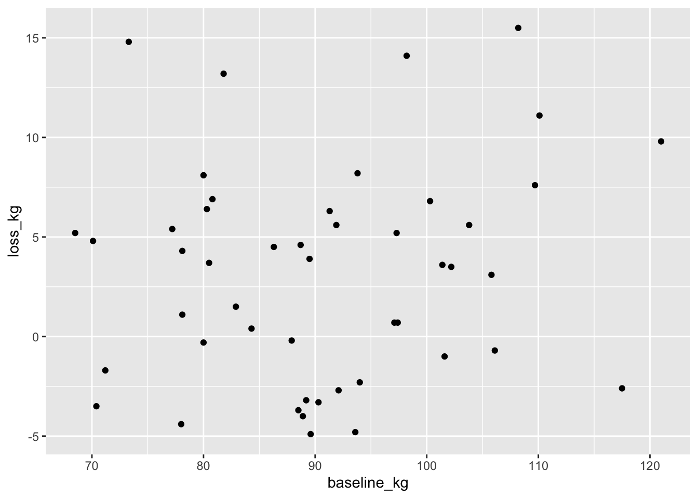
1.7 Layer by layer: a boxplot that grows
Rather than jumping to a finished plot, build one up one layer at a time. Our main question: how much weight did each group lose?
# startggplot(trial_A_data, aes(x = group, y = loss_kg)) +geom_boxplot()
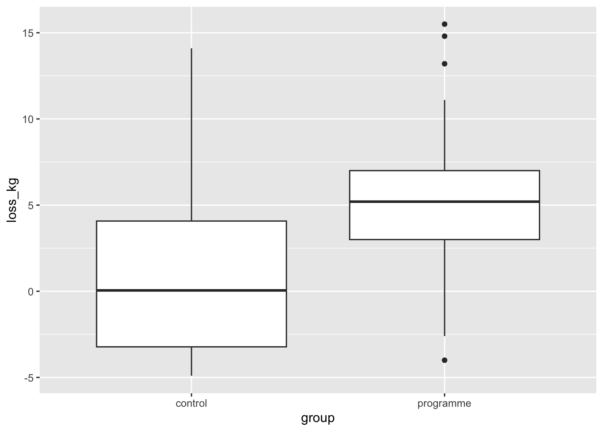
Notice that you can change the size of the plot in Quarto by modifying a header of the cell. Here, I added fig.width=3, fig.height=4
# startggplot(trial_A_data, aes(x = group, y = loss_kg)) +geom_boxplot()
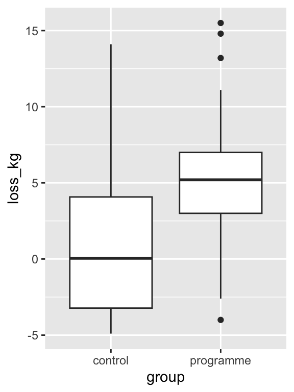
This is a nice plot but a bit boring. Next we will use the fill aesthetic to give it come colour. The fill aesthetic maps specific variable, in this case group to a property of the plot, in this case the color of the fill. Better, no?
# add fill by group, and flip the coordinates so the groups run down the pageggplot(trial_A_data, aes(x = group, y = loss_kg, fill = group)) +geom_boxplot(show.legend =FALSE)
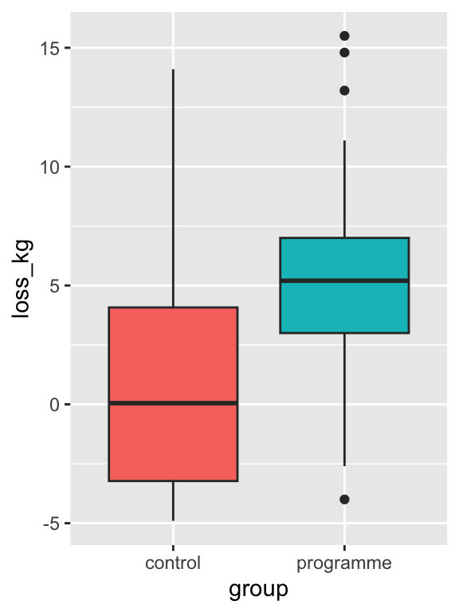
Notice how you can also flip the axes, in case you prefer.
# add fill by group, and flip the coordinates so the groups run down the pageggplot(trial_A_data, aes(x = group, y = loss_kg, fill = group)) +geom_boxplot(show.legend =FALSE) +coord_flip()
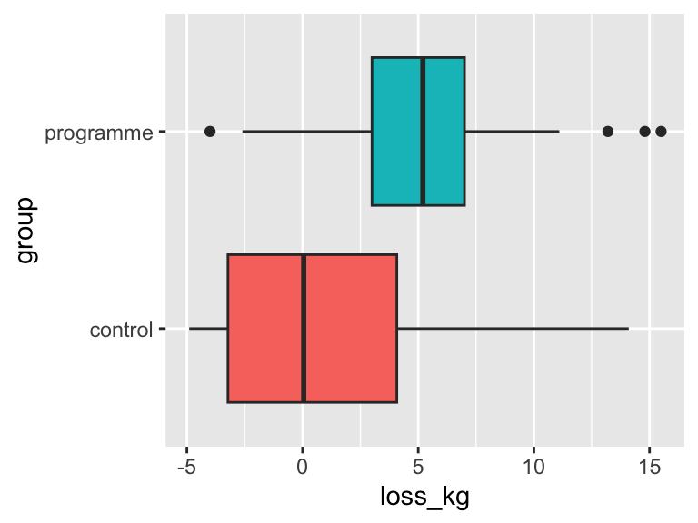
Each addition is one idea: fill maps a variable to colour (a scale), coord_flip() changes the coordinate system. Nothing about the data changed between the two plots — only how it’s shown!
1.8 geom_bar() vs. geom_col()
# geom_bar() counts rows for youggplot(trial_A_data, aes(x = sex)) +geom_bar()
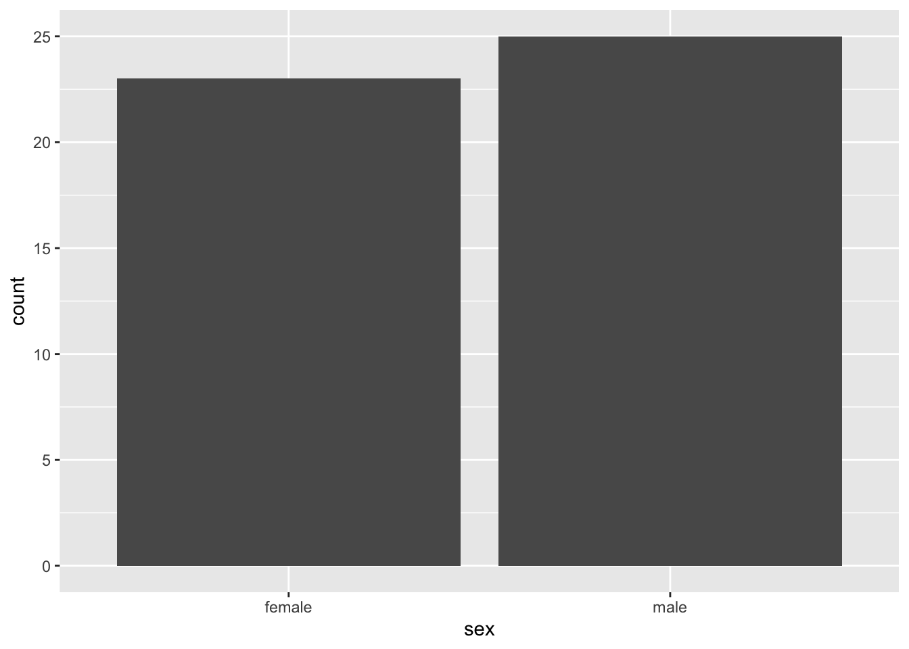
Same picture, two different starting points: geom_bar() expects raw rows and counts them; geom_col() expects a column of values already summarised (here, by count()).
Next step: adjust the y axis. scale_y_continuous() controls the y scale: breaks sets where the tick marks go, limits sets the range shown, and name sets the axis title:
ggplot(trial_A_data, aes(x = sex)) +geom_bar() +scale_y_continuous(name ="Number of participants",breaks =seq(0, 30, by =5),limits =c(0, 30))
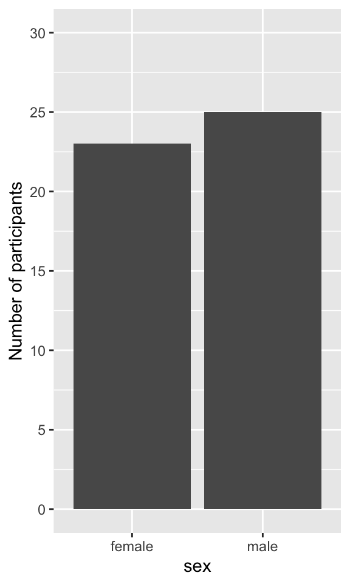
Only the axis changed; the bars are the same. Be careful with limits, though: any value outside the limits is removed from the plot (!!!). Here every count fits between 0 and 30, so nothing is lost.
1.9 Colour as a data-type decision
Colour is another aesthetic: just as x and y map columns to positions, colour maps a column to colours. Which kind of palette you use depends on the type of that column, not on taste.
First, a categorical variable. group has two unordered levels, control and programme, so each level gets its own, clearly different colour. scale_colour_brewer(palette = "Set2") picks a qualitative palette (distinct colours, none “bigger” than another):
Now a continuous variable. age runs from the 20s to the 50s, so the colour should change gradually with it: light-to-dark (or one hue to another) as age increases. scale_colour_viridis_c() is a sequential palette (the _c stands for continuous), and it stays readable in greyscale and for colour-blind readers:
Notice the legends: a set of separate keys for group, a continuous colour bar for age. ggplot2 chose these because of the column types; the palette functions only control which colours are used.
1.10 Faceting
Colour is one way to show the two groups in a single plot. Another is to give each group its own panel. facet_wrap(~ group) splits the data by group and draws the same plot once for each level, side by side and on shared axes:
These are small multiples: easier to read than one crowded plot when there are many groups, and the shared axes keep the panels directly comparable.
1.11 Themes
Finally, the theme controls everything that isn’t data: the background, gridlines, fonts and legend position. ggplot2 has several complete themes; here we swap the default grey background for theme_minimal():
The points, colours and axes are exactly as before; only the look around them changed. This is the whole grammar, end to end: data, aesthetics, geoms, scales, coordinates, facets, theme, each one a separate, swappable layer.
1.12 Adjusting individual theme properties
A complete theme like theme_minimal() is a starting point. To change single properties, add theme() after it. Inside theme(), each property is set with an element function that matches what kind of thing it is:
element_text() for text (titles, axis labels): size, face ("bold", "italic"), colour;
element_line() for lines (gridlines, axis lines): colour, linewidth;
element_blank() to remove something altogether.
Some properties take a plain value instead, e.g. legend.position = "bottom".
Here we make the title bold, enlarge the axis titles, remove the minor gridlines, draw the axis lines, and move the legend below the plot:
ggplot(trial_A_data, aes(baseline_kg, loss_kg, colour = group)) +geom_point() +labs(title ="Weight loss by starting weight",x ="Baseline weight (kg)", y ="Weight loss (kg)") +theme_minimal() +theme(plot.title =element_text(face ="bold", size =16),axis.title =element_text(size =13),panel.grid.minor =element_blank(),axis.line =element_line(colour ="grey30"),legend.position ="bottom")
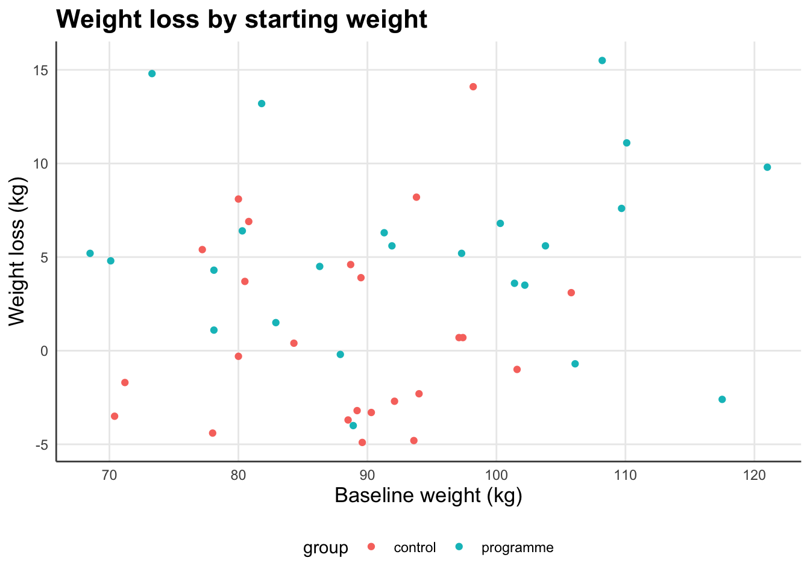
Order matters: theme() must come aftertheme_minimal(), otherwise the complete theme overwrites your changes.
1.13 Creating your own theme and reusing it
In a paper or thesis, every figure should look the same: same fonts, same gridlines, same legend position. Rather than copying the same theme() lines into every plot, define the theme once and save it as an object. A theme is just an R object, so it can be stored with <- like anything else:
theme_paper <-theme_minimal(base_size =13) +# base_size sets all text sizes at oncetheme(plot.title =element_text(face ="bold"),panel.grid.minor =element_blank(),axis.line =element_line(colour ="grey30"),legend.position ="bottom")
The same idea works for colours: store the group colours once, so control and programme have the same colour in every figure:
Now apply both to any plot by adding them with +. First a scatterplot:
ggplot(trial_A_data, aes(baseline_kg, loss_kg, colour = group)) +geom_point() +scale_colour_manual(values = group_colours) +labs(title ="Weight loss by starting weight",x ="Baseline weight (kg)", y ="Weight loss (kg)") + theme_paper
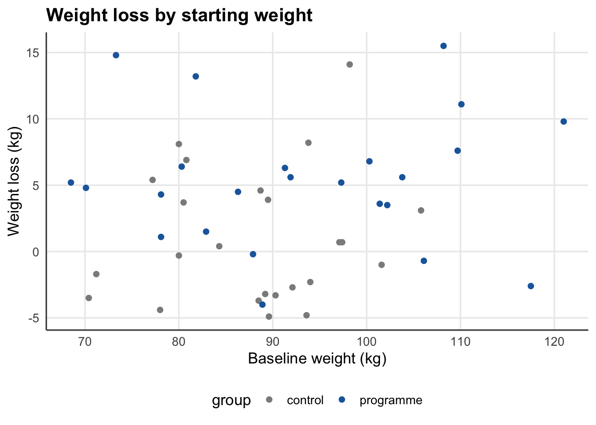
Then a completely different plot, a boxplot, with exactly the same look:
ggplot(trial_A_data, aes(x = group, y = loss_kg, fill = group)) +geom_boxplot() +scale_fill_manual(values = group_colours) +labs(title ="Weight loss by group", x =NULL, y ="Weight loss (kg)") + theme_paper
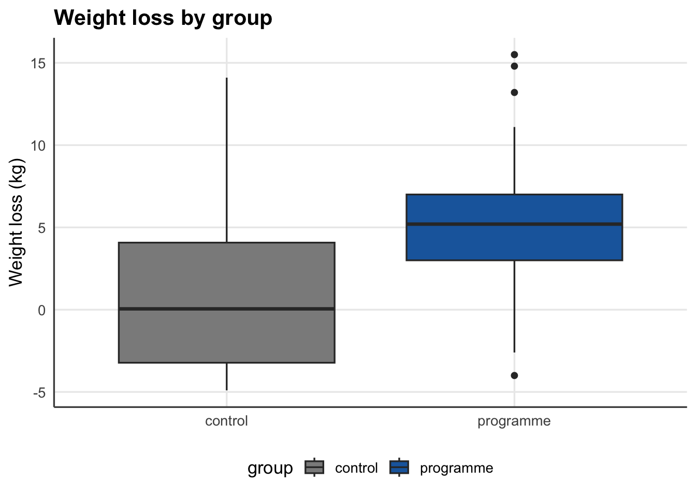
To change the look of every figure later, edit theme_paper in one place and re-run. If you want a theme to apply to all plots in a script without adding it each time, set it as the default once at the top:
theme_set(theme_paper) # every ggplot() from now on uses theme_paper
Simple, and in order — each one builds on the last. Every exercise mirrors a walkthrough subsection from Part 1 (named in brackets), but this time on Trial B, Seminar 2’s other trial: n = 4,000 per group, the same population SD of 5 kg.
Start by loading Trial B’s data. It has the same columns as Trial A’s (id, group, sex, age, baseline_kg, loss_kg), just many more rows:
Exercises 1–3, 5 and 6 work from Trial B’s design (n, SD and a 2 kg effect), so they don’t need the data. Exercise 4 uses the data to find the effect Trial B actually observed.
Exercise 1 — qt() for Trial B [mirrors 1.1]
Trial B’s df is 2 * 4000 - 2 = 7998. Using qt(), find its two-sided 5%-level critical value. It should be very close to Trial A’s — explain in a comment why, even though the two trials have wildly different n.
# your code here
Exercise 2 — Power by hand for Trial B [mirrors 1.2]
Following 1.2’s steps exactly (se, df, t_crit, the threshold in kg, its t-score under H1, then pt()), calculate Trial B’s power to detect a 2 kg effect with n = 4,000 per group. Then check it with the exact ncp version. Use sd <- 5 and mean_diff <- 2, just like Trial A — only n changes.
# your code here
Exercise 3 — Confirm with pwr.t.test() [mirrors 1.3]
Check Exercise 2’s answer against pwr.t.test(). Do the two match?
# your code here
Exercise 4 — Trial B’s own effect [mirrors 1.4]
Trial B didn’t find anything close to 2 kg. Using trial_B_data, calculate the mean weight loss in each group (as in 1.6) and the difference between them. You should get about 0.243 kg, which is d = 0.243 / 5 ≈ 0.049.
Now recompute the power (by hand, or with pwr.t.test()) for this effect at n = 4,000. Why is it so much lower than Exercise 2/3’s answer, even with identical n? In a comment, connect this back to 1.4’s observed-power fallacy.
# your code here
Exercise 5 — Power by simulation for Trial B [mirrors 1.5]
Adapt 1.5’s one_trial() to Trial B’s n and a 2 kg effect (mean1 = 0, mean2 = 2, sd1 = sd2 = 5, n = 4000). Replicate it and estimate the simulated power. Compare it to Exercises 2 and 3.
# your code here
Exercise 6 — Unequal SDs, once more [mirrors 1.5]
Repeat Exercise 5, but with sd1 = 4 and sd2 = 6 instead of 5 and 5. Does the simulated power change much? In a comment, say why pwr.t.test() can no longer promise an exact answer here, while the simulation needed no changes beyond the two numbers.
# your code here
Plotting (7–14)
All plotting exercises use trial_B_data.
Exercise 7 — First look [mirrors 1.6]
Explore trial_B_data before plotting it: use glimpse(), summary() and count(). How many participants are in each group, and in each group by sex? Which columns are categorical, and which are continuous?
# your code here
Exercise 8 — Your first plot [mirrors 1.6]
Make a scatterplot of loss_kg (y) against baseline_kg (x). With 8,000 points the plot is very crowded: add alpha = 0.2 inside geom_point() to make the points transparent, so you can see where they pile up.
# your code here
Exercise 9 — Adding colour [mirrors 1.9]
Add colour = group to Exercise 8’s aesthetic mapping. Can you tell the two groups apart? What does that tell you about a 0.24 kg difference?
# your code here
Exercise 10 — A boxplot [mirrors 1.7]
Make a boxplot of loss_kg by group. Compare it with Trial A’s boxplot from 1.7.
# your code here
Exercise 11 — Bar charts and the y axis [mirrors 1.8]
Build a bar chart of the number of participants of each sex both ways: once with geom_bar() directly on trial_B_data, once by summarising with count() first and plotting with geom_col(). In a comment, say which geom expects already-summarised data. Then use scale_y_continuous() to give the y axis a proper title and breaks.
# your code here
Exercise 12 — One layer at a time [mirrors 1.7]
Starting from Exercise 10’s boxplot, add fill = group, then (as a second, separate version) also add coord_flip().
# your code here
Exercise 13 — Faceting [mirrors 1.10]
Facet Exercise 8’s scatterplot by sex using facet_wrap(~ sex).
# your code here
Exercise 14 — Put it together [mirrors 1.11–1.13]
Build one plot combining at least three grammar components from this week: a geom, a colour scale, and either a facet or a theme. Finish it with theme_paper and group_colours from 1.13, so it matches your Trial A figures.
# your code here
Extra (optional)
Normal vs. t-distribution
Everything above used the t-distribution, the correct choice whenever the population SD is estimated from the sample (as it almost always is). Here’s what changes if you use the normal distribution instead.
As df grows, qt() gets closer to qnorm()’s fixed 1.96 — the t-distribution is the normal distribution, with extra uncertainty built in for small samples.
E2 — Using the normal for Trial A anyway.
se <-1.44# Trial A's SE, from Seminar 2moe_t <-qt(0.975, 46) * semoe_z <-qnorm(0.975) * sec(t_based = moe_t, normal_based = moe_z)
t_based normal_based
2.898570 2.822348
The normal-based margin of error is a little too small — it understates the real uncertainty when n is this modest, which is exactly why the t-distribution exists.
R-tistry
“R-tistry” is generative art made entirely with R code — the same ggplot2 grammar from Part 1, pointed at making something to look at rather than something to read. Explore these first:
aRtsy — a package that generates a finished piece from one line of code (e.g. aRtsy::canvas_strokes()), if you’d rather start from something and modify it.
R1 — Points and noise. Make a plot using geom_point(), jitter, transparency (alpha), and colour — no “correct” answer, just see what happens.
# your code here
R2 — Try aRtsy. Install it (renv::install("aRtsy")), then call one aRtsy::canvas_*() function and change a couple of its parameters.
# your code here
R3 — Your own piece. Make the piece you’ll actually submit.
# your code here
Submitting: post your piece (and, ideally, the code) wherever the module tells you to submit it. The class and the wider School of Psychology will vote on their favourites, and the winner receives an important statistical award.
Reading assigned today (due before Week 10)
TBC — will be announced at the end of this session.
Where to get help
Ask on the PSY40760 module forum (tag Ondrej or Cameron) any time before the session, or bring questions/your laptop to the practical — Cameron is there specifically for this.